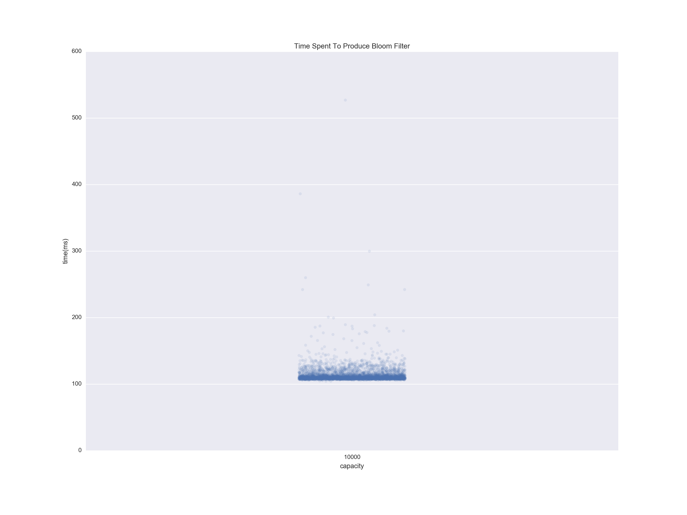
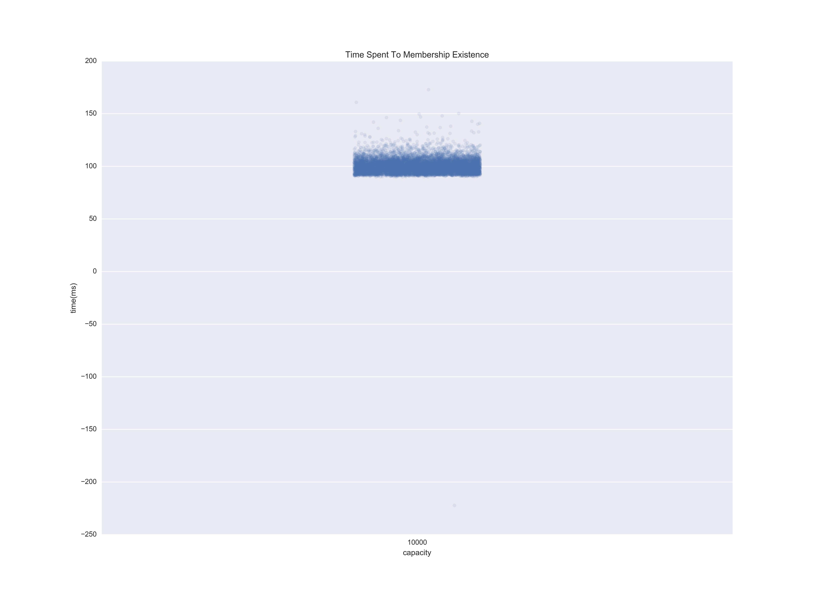
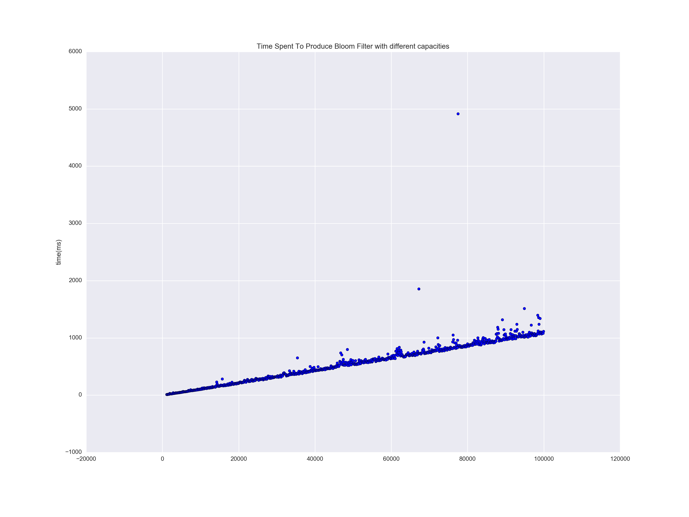
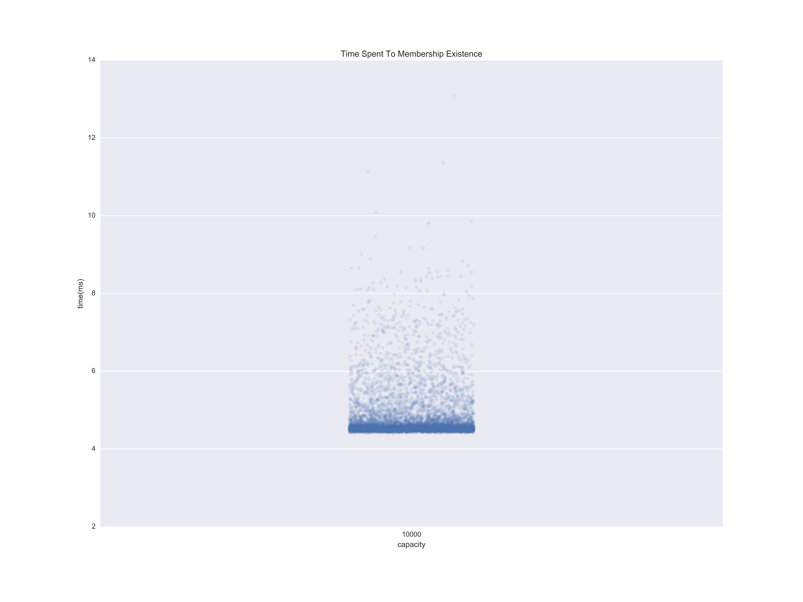
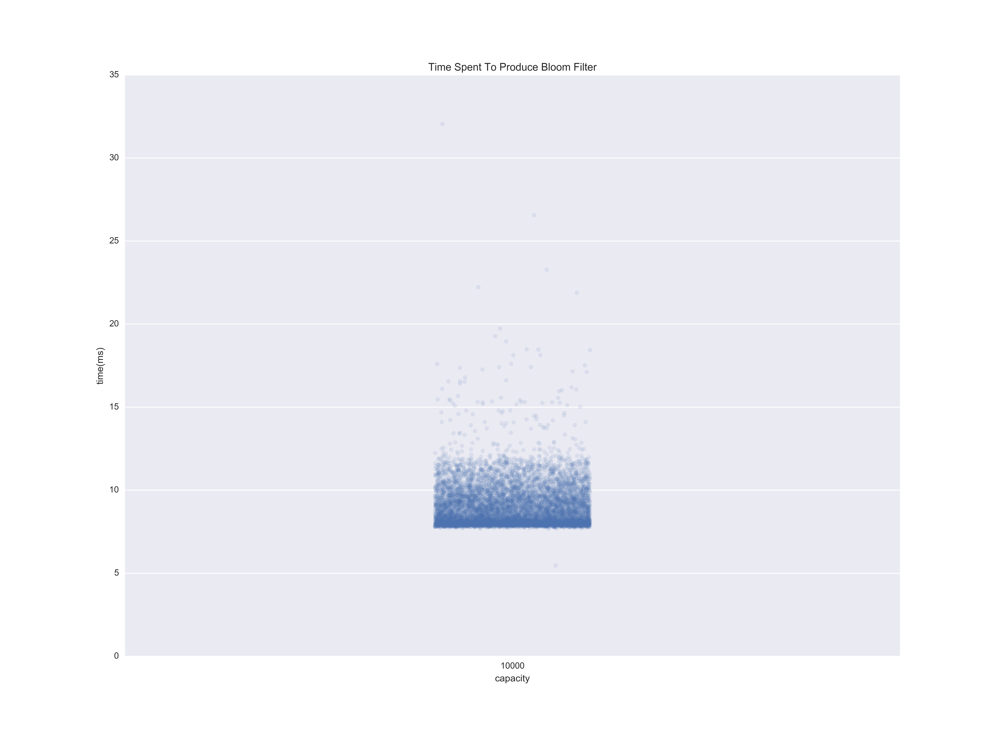
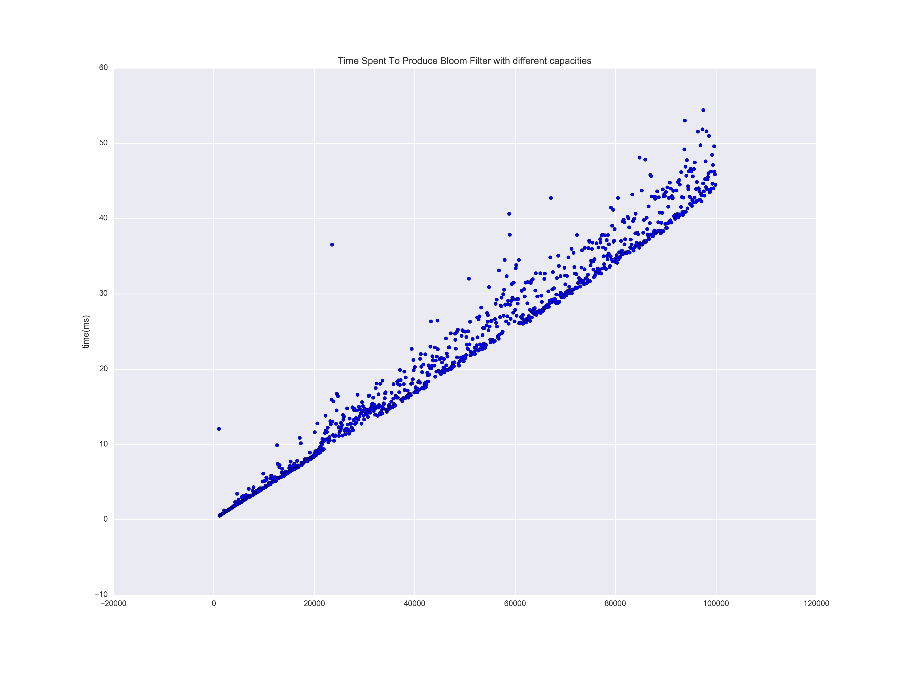

Bloom Filter
, Relationship Service and All That
Ineligible People List
- Grows fast(player activity + all of the subjects activity)
- Needs to access the list very fast as every recommendation generation depends on
First Solution
Couple of problems
- The ineligible list is unbounded
- We process 4 million ratings per day in Hinge v3; we are targeting much larger userbase at the end of this year
- Grows fast; both user and subject activity makes the ineligible list longer
- Compiling that list and sends a payload about 250kb between services 4 million times
- 1 terabyte payload per day just for ratings :: Not so awesome
Quick Math assuming 1% error rate in processing rating endpoint
- 4 Million Rating Per Day
- 40K Failure Per Day
- 1.7 K Failures Per Hour
- ~0.94 Failure Per Second
Second Solution
Still not great
Third Solution
What if
Bloom Filter
Applications
- Original :: Spellcheckers when the hardware was expensive
- Canonical :: Forbidden passwords or blacklisting of url lists in some fashion
- Modern :: Network Routers => limited by the memory and they need to be super fast
- Post-Modern :: Hinge => Ineligible people check
Raison D'être
- Super fast insert
- Super fast lookup
- No false negatives :: all of the items that are inserted return true for membership existence. We never want to show people to you one more time if we recommended them earlier
- You could increase the space in order to reduce the false positive rate or vice versa
- You cannot invert the hashmap to get the items that are already inserted; you can do only membership existence
Bloom Filter :: Under The Hood
##### Insertion - $x$: For $i=1, 2, \ldots, k$, - Set $A[h_i(x)] = 1 $
##### Lookup - $x$: return True if and only if - $A[h_i(x)] = 1$ for every $i = 1, 2, \ldots, k$
##### Error Rate - $\le 1 - e^{\frac{-k^2}{b}}$
#### How to set $k$? - Taking derivative of error rate: - $ k=b \times ln(2) $
Experiments that we did
Time to produce a bloom filter with 10K capacity

Time to check of membership existence in bloom filter with 10K capacity

Varying Capacity of Bloom Filter with Time

Time to produce a bloom filter with 10K capacity

Time to check of membership existence in bloom filter with 10K capacity

Varying Capacity of Bloom Filter with Time

However, we could not use the new fast library as it does not support Python 3
I am looking at you; API and relationship service
Not everything is so great
- Bloom filter does not provide an ineligible list; so one needs to check every compatible person if it exists in the bloom filter. The time that membership check from Bloom filter increases linearly with the number of compatible people. Luckily, the lookups are super fast.
- Recommender in Python 2 and API is in Python 3. Serialization of binary data from Python 3 to Python 2 in JSON was the most joyful event in my career... Said nobody.
- Getting ineligible list, serializing into a bloom filter in Relationship Service and deserialize in Recommender. There is some overhead comparing to what we had earlier.
But Some Are
- Bloom filter is itself a cool data structure. It allows you to make trade-off between space and false-positive rate.
- We did the timing experiment and also the space experiment before dedicating ourselves to Bloom Filter. It worked out pretty great to build some confidence before dedicating ourselves fully to the Bloom filter.
- Instead of compiling the ineligible list in the ratings process endpoint, we do this in the query potentials endpoint which is much more rarely accessed and used than process ratings endpoint.
But Some Are
Relationship Service
- Centralized place to process ratings, connections, potentials and incoming likes.
- One service to rule them all.
Recommendation Generation Process

Rating Processing